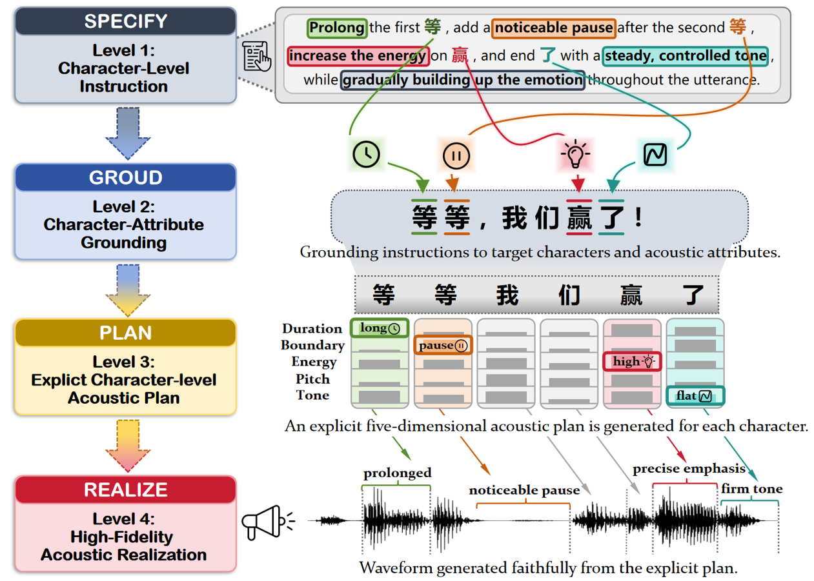
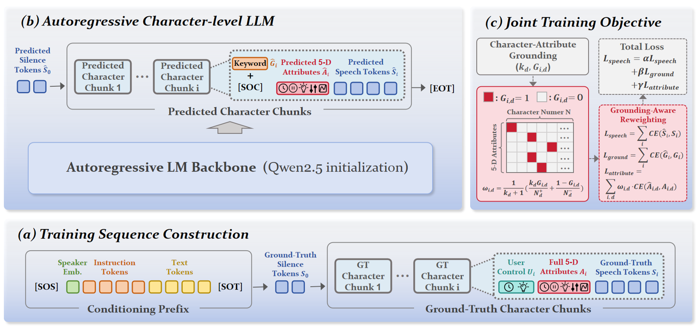

Listening Recommendation:
Please listen to the Reference audio first to familiarize yourself with the target speaker’s voice, and then compare how well each system follows the same synthesis text and instruction.
The Reference audio corresponds to the reference text, while all other audio samples correspond to the target synthesis text. To prevent overlapping playback, starting a new audio sample will automatically pause the currently playing one.